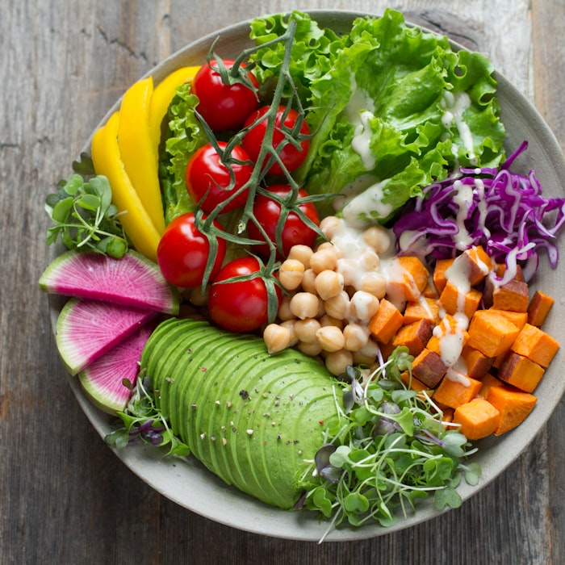
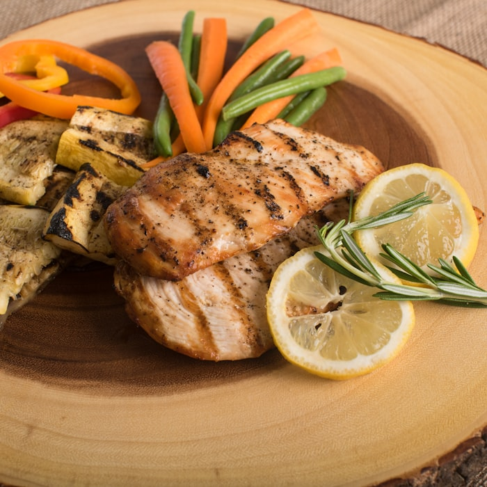
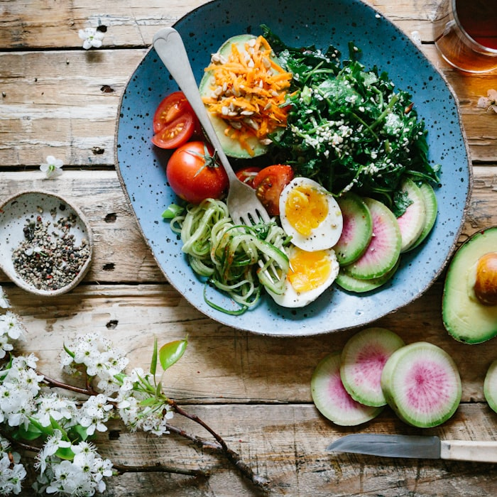
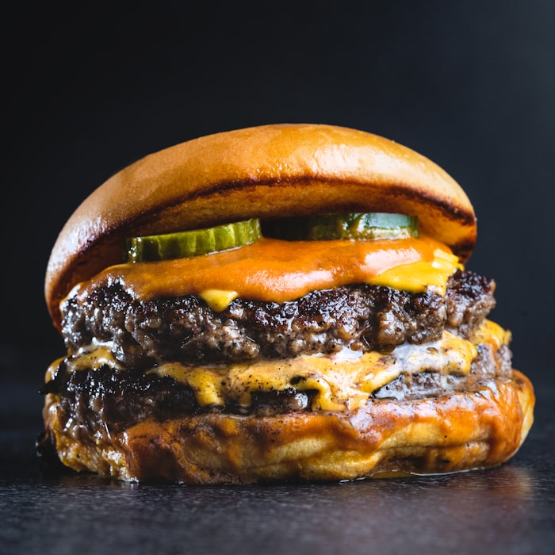
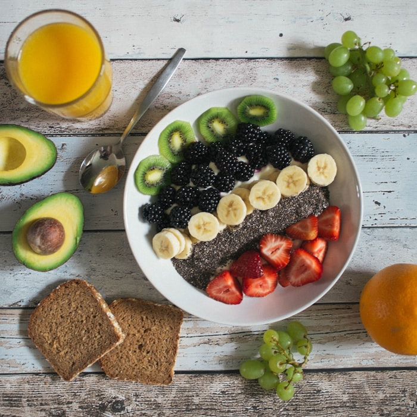

Lose weight without logging your life away.
Ratiō reads your plate like a nutritionist would — snap a photo, get accurate calories and macros in seconds. The photo-speed of Cal AI, the macro precision of MacroFactor, so tracking finally sticks long enough to actually work.
Free to join. No spam, just a heads-up when we launch on iOS.
340+ people already waiting for launch
Three steps. Ten seconds. Done.
No search bars, no scrolling through barcode databases, no guessing portion sizes. Just point your camera at your food.

Snap a photo
Open Ratiō and take a picture of whatever's on your plate — homemade, takeout, or a burger you're not proud of. No prep needed.

AI does the math
Ratiō identifies each ingredient, estimates portion size from the image, and cross-checks it against a nutrition database built for accuracy — not guesswork.

Get real numbers
Calories and macros logged automatically — protein, carbs, and fat broken down so you know exactly what's fueling your progress.
Most people don't quit dieting. They quit logging.
Weight loss isn't hard because of willpower — it's hard because tracking your food usually feels like a part-time job. So people track for four days and stop. Ratiō was built to fix the actual point of failure.
Too slow
Searching a food database, scrolling past ten wrong results, and manually weighing ingredients takes 3–5 minutes per meal. Ratiō takes three seconds.
Too imprecise
Generic barcode apps guess at homemade meals and restaurant food — the exact meals hardest to track and easiest to underestimate.
Too tedious to sustain
Willpower runs out. A habit that takes ten seconds survives busy weeks, travel, and bad days. One that takes five minutes doesn't.

Speed and accuracy. Not one or the other.
Photo-logging apps are fast but rough around the edges. Precision apps are accurate but slow. Ratiō was built to be both.
| Ratio | Photo-only apps | Manual macro apps | |
|---|---|---|---|
| Log a meal from a photo | ✓ 3 sec | ✓ Fast | ✕ Manual entry |
| Accurate macro breakdown | ✓ Precise | Often rough | ✓ Precise |
| Works on homemade meals | ✓ | Hit or miss | ✓ (manually) |
| Adapts targets as you progress | ✓ | ✕ | ✓ |
| Time per meal logged | ~3 seconds | ~15 seconds | 3–5 minutes |
This is what Ratiō sees in three seconds.
No cherry-picked salads. Here's the actual output format on three real meals — the exact kind of food generic apps guess wrong.



Example outputs shown in Ratiō's actual result format. Estimates refine as our nutrition database grows during beta.
Good to know
How accurate is the AI, really?
Ratiō is trained specifically for portion and ingredient estimation, then cross-referenced against a verified nutrition database — so you get restaurant-and-homemade-meal accuracy, not a rough guess.
When does Ratio launch?
We're finishing iOS testing now. Waitlist members get early access before the public App Store launch, plus a founding-member discount.
Do I need to weigh my food?
No. Ratiō estimates portions visually. You can always fine-tune a result, but most people never need to.
Is my data private?
Yes — photos are processed to extract nutrition data. We never sell your photos, and we only share them with the vendors who help power the AI analysis, never for advertising. See our Privacy Policy for full details.
Start losing weight without losing your patience.
Be first in line when Ratiō launches on iOS. No spam — just one email when it's ready.